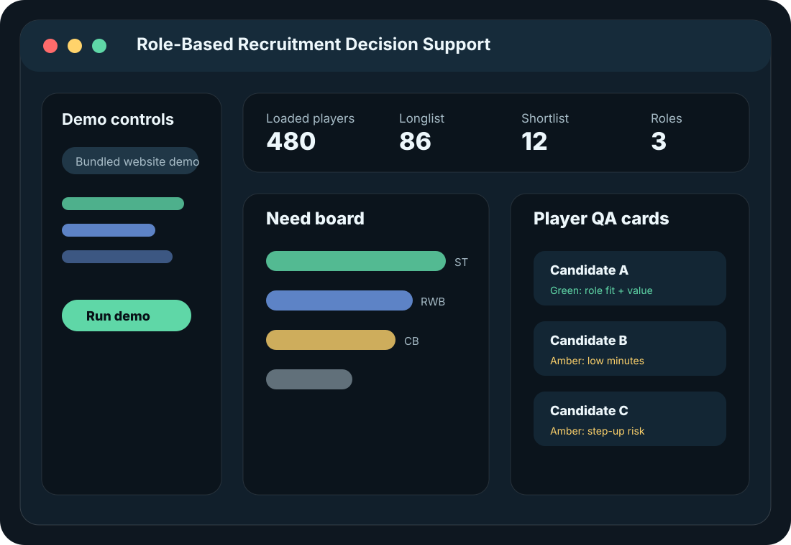

01
Squad need hypothesis
Estimate where a squad may need reinforcement using depth, minutes, age profile and role benchmarks.
An interactive football analytics demo that turns a squad scenario into recruitment hypotheses, role-based longlists, explainable shortlists and QA flags for further scout, video, medical and financial validation.

The aim is not to claim that public data can make final recruitment decisions. The aim is to show how public data can structure the first screening layer and make assumptions transparent before specialist human validation.
Estimate where a squad may need reinforcement using depth, minutes, age profile and role benchmarks.
Filter players by broad role family, age, minutes, value proxy and availability-related signals.
Rank candidates with transparent weights for role performance, value, reliability and club context.
Highlight low-minutes, value, injury-history and data-coverage risks before final judgement.
The Streamlit app is designed to be embedded here after deployment. It also has a direct link so recruiters or analysts can open it in a full browser tab.
app.py to Streamlit Community Cloud or Hugging Face Spaces, then replace YOUR-STREAMLIT-SUBDOMAIN in website/config.js.This is deliberately framed as decision support, not automated recruitment advice. The strongest version combines transparent scoring, reproducible public data, sensitivity checks and human-in-the-loop validation.
This static page works as the polished project landing page for your personal website.
The Streamlit app can be deployed separately and embedded in the website using an iframe.
The repository provides reproducibility, code, schema, methodology and exportable outputs.